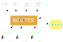

Jan Černohorský
Slidy najdete na talks.grsc.cz/ad-infra
European Coal and Steel Community
Eurovision Cover Song Contest
European Cybersecurity Challenge
Organizuje ENISA
Desetičlenné týmy do 26 let (min. 5 do 20)
Česká kvalifikace je Kybersoutěž
Existuje OpenECSC (každý rok jiné)
> POST /register < 200 OK > POST /notes/private > > ECSC_080A02AF0J07UMOPHNE00KJ48KAE28C= < 201 Created < < New note ID: 12 ... > GET /notes/private < 200 OK < < Note 12: ECSC_080A02AF0J07UMOPHNE00KJ48KAE28C=
> GET /notes/private/1 < 404 Not Found > GET /notes/private/2 < 404 Not Found ... > GET /notes/private/11 < 404 Not Found > GET /notes/private/12 < 200 OK < < Note 12: ECSC_080A02AF0J07UMOPHNE00KJ48KAE28C=
Vulnbox nesmí poznat,
s kým se baví!
mnoho týmů, každý útočí a brání zároveň
existuje NOP tým
¹ typicky 3 – 6
import requests
TEAM_TOKEN = '4242424242424242'
flags = ['AAAAAAAAAAAAAAAAAAAAAAAAAAAAAAA=', 'BBBBBBBBBBBBBBBBBBBBBBBBBBBBBBB=']
print(requests.put('http://10.10.0.1:8080/flags', headers={
'X-Team-Token': TEAM_TOKEN
}, json=flags).text)
Čas kdy týmy mají přístup k vulnboxu, ale není otevřená síť
Obvykle ½ – 1 hodina
DIY | Full access | git only |
|---|---|---|
|
|
|
Ano, ale ne DoS | Ne |
|---|---|
|
|
.pcapyargv, vlajky stdout
target = json.loads(sys.argv[1])
team_id = target["id"]
flag_ids = target.get("flag_ids", {})
time = target.get("time")
# Example of flag_ids: {
# 'service-1': [ 'flag-id-1', 'flag-id-2' ]
# 'service-2': [ 'flag-id-3', 'flag-id-4' ]
# }
flag_ids = flag_ids['service-1']
host = f"10.10.{team_id}.3"
# Anything printed to stdout or stderr is regex matched to find valid flags
# Flags are extracted and sent to the server
# Non-flag output is just printed on the client
print(f"Attacking {team_id=} at {host=}")
for flag_id in flag_ids:
r = requests.get(f"http://{host}:3000/users/{flag_id}").text
print(r)
info = json.loads(sys.argv[1]) if len(sys.argv) > 1 else {}
team_id = info.get("team_id")
service = info.get("service")
# Note that this could be `None` if DF doesn't provide host info
host = info.get("host")
# Flag id is present if the script is set to run per flag id
flag_id = info.get("flag_id")
# Anything printed to stdout or stderr is regex matched to find valid flags
# Flags are extracted and sent to the server
# Non-flag output is just printed out on the client
print(f"Attacking {service=} of {team_id=} at {host=} with {flag_id=}")
# Example: Generating some flags
# NOTE: These example flags will likely not be matched by your flag regex
r = requests.get(f"http://{host}:3000/users/{flag_id}").text
print(r)
from exploitlib import *
# class Team(id: str, name: str | None, display: str, metadata: dict[str, Any], services: dict[str, Service])
# class Service(id: str, name: str | None, host: str | None, metadata: dict[str, Any], flag_ids: list[FlagId])
# class FlagId(id: int, content: str, service: Service, team: Team, info: dict[str, Any], received: datetime, has_flag: bool)
class Exploit(ExploitBase):
def process_tick(self) -> None:
# This is called exacly once per attack_period
# This is the first method to be called
# State (stuff assigned to self) created here will be usable in process_team and process_flag_id
print("Exploit.process_tick")
def process_team(self, team: Team, service: Service | None) -> None:
# This is called once for each team every attack_period
# This will not be execute in --single-instance mode
# State (stuff assigned to self) created here will be usable in process_flag_id
print(f"Exploit.process_team: {team.display}, {service.display if service else None}")
def process_flag_id(self, team: Team, service: Service, flag_id: FlagId) -> None:
# This is called once for each flag id of every team every attack_period
# This will not be execute in --single-instance and --per-team modes
# State (stuff assigned to self) created here will be usable only here
print(f"Exploit.process_flag_id: {team.display}, {service.display}, {flag_id.id}")
if __name__ == "__main__":
main(Exploit)
↓